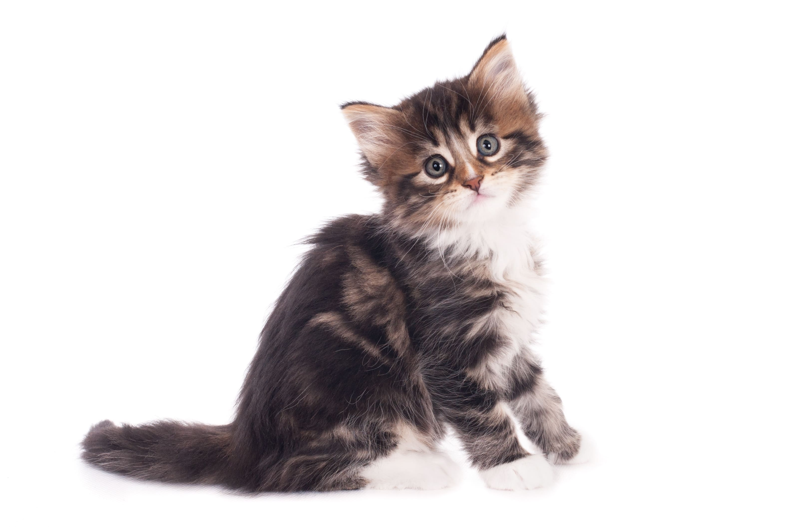

Catlo, berdiri sejak 1994 dan dimulai sebagai pabrik kecil bekas stasiun kereta di Jakarta, menjual makanan dan aksesoris kucing berkualitas tinggi, ini adalah perusahaan yang berdedikasi untuk memberikan cinta dan perawatan terbaik untuk kucing. Dari pabrik kecil di Jakarta, kami telah berkembang menjadi nama besar di Indonesia dalam menyediakan makanan organik dan aksesoris stylish untuk kucing.
Lebih dari sekedar produk, kami berkomitmen untuk mengedukasi pemilik kucing tentang nutrisi dan perawatan kucing. Catlo adalah komunitas yang berbagi pengetahuan dan cinta terhadap kucing. Kami bangga menjadi bagian dari perjalanan setiap kucing dan pemiliknya.
Kembali